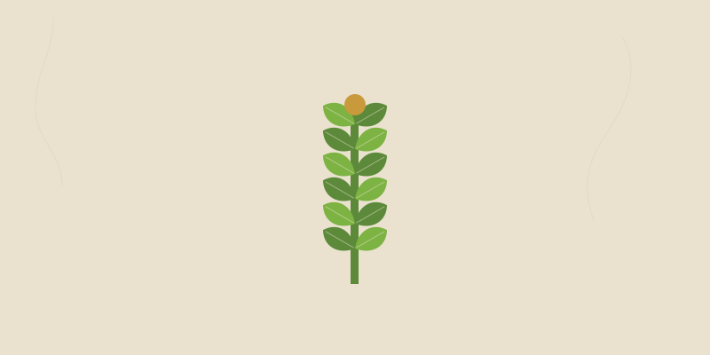
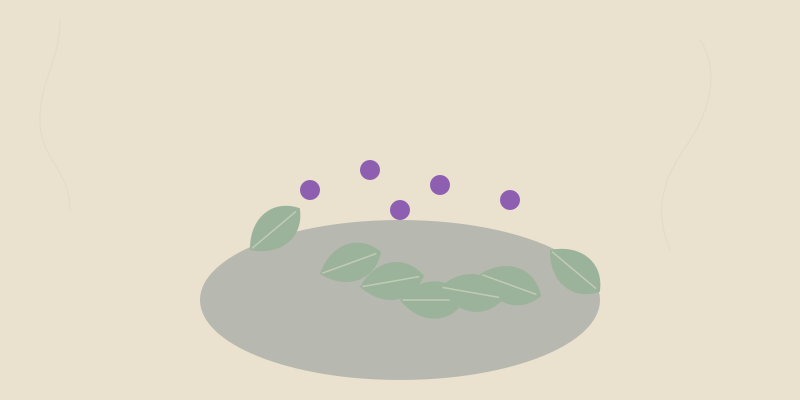
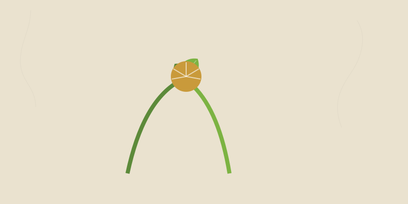
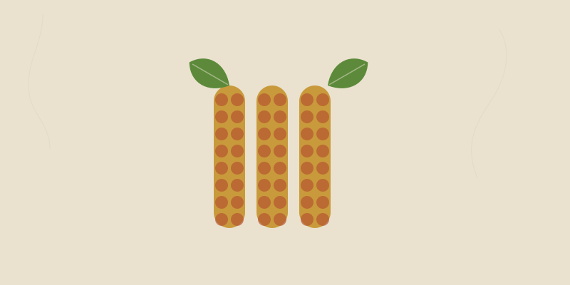

No plants match that.
Try a different word or clear your filters.
Vegetables
Food crops for the bed, the bucket, and the pantry.
 We grow it
We grow itHeirloom Tomato
The plant that turns a beginner into a gardener. One good heirloom tomato off your own vine and you're hooked for life.…
We grow itOkra
The one crop that laughs at a Texas August. When everything else quits in the heat, okra is just getting started.…
We grow itSweet Potato
A survival staple disguised as a garden crop: massive calories, stores for months, and the leaves are edible greens all …
Collard Greens
The most forgiving green in the South. Hardy through frost, harvest leaf-by-leaf for months, and it actually tastes swee…
We grow itBell Pepper
Sweet, crunchy, and endlessly useful — the gateway pepper that handles Texas heat better than tomatoes do.…
We grow itJalapeño
The workhorse hot pepper. Productive, heat-tough, and happy in a five-gallon bucket on a Texas patio.…
Serrano Pepper
Hotter and brighter than a jalapeño, and it shrugs off the worst of a Gulf Coast summer.…
Eggplant
A true heat crop that thrives when nights stay warm — perfect for the long Texas summer.…
Cucumber
Fast, forgiving, and prolific. Trellis it to save space and grow straighter fruit.…
Zucchini
The crop that famously overwhelms you. One or two plants feed a household all summer.…
Yellow Summer Squash
Tender, quick, and generous. Pick small and often to keep it producing.…
We grow itBush Green Bean
Beginner-proof, fast, and they fix their own nitrogen. Succession-sow for a steady supply.…
Pole Bean
Climbs a trellis, fixes nitrogen, and keeps producing longer than bush types.…
We grow itSouthern Pea (Cowpea)
Blackeye, crowder, cream — the South's hot-weather protein that fixes nitrogen and feeds the soil too.…
Lima Bean
Heat-loving protein crop. Needs warm soil but rewards you with storable, calorie-dense beans.…
Sweet Corn
Plant in blocks, not rows, so wind can pollinate it. Nothing beats corn picked minutes before the pot.…
We grow itCarrot
Loose deep soil is the whole secret. Rocky or compacted ground gives you forked, stubby roots.…
Beet
Two crops in one — sweet roots below, nutritious greens above. Loves the cool shoulder seasons.…
Radish
The fastest reward in the garden — some are ready in three weeks. Perfect for impatient kids and beginners.…
Turnip
An old survival staple — fast roots and greens from the same plant, thriving in cool Texas months.…
Kale
Cold actually makes it sweeter. A cut-and-come-again green that can feed you through a Texas winter.…
We grow itCollard Greens
The South's bulletproof green. Pick the lower leaves and it just keeps making more for months.…
Cabbage
A cool-season classic that stores for weeks and ferments into kraut for months.…
Broccoli
Harvest the central head, then keep cutting side shoots for weeks. A cool-season heavy hitter.…
Cauliflower
The diva of the brassicas — worth it, but it wants steady cool weather and even water.…
Lettuce
Cut-and-come-again leaf types beat heading types in Texas — harvest outer leaves and it regrows.…
Spinach
A cold-loving green that's all but impossible in Texas summer — sow it in fall and winter instead.…
Swiss Chard
The most heat-tolerant of the leafy greens, and gorgeous with rainbow stems. Cut outer leaves all season.…
Onion
In the South you must plant short-day varieties or they'll never bulb. Cure them dry and they store for months.…
Garlic
Plant cloves in fall, harvest in early summer. Softneck types store longest and suit the South.…
Potato
Serious storable calories from a small space. Hill soil over the stems to grow more tubers.…
We grow itSweet Potato
One of the best survival calories for the Deep South — heat-loving, drought-tough, and the leaves are edible too.…
We grow itWinter Squash
Butternut and other moschata types resist the squash vine borer that kills other squash — and they store all winter.…
Pumpkin
Needs room to roam, but the payoff is storable squash and seeds. Sow by early summer for fall harvest.…
Watermelon
A true heat crop that loves a long Texas summer. Sandy soil and warmth give the sweetest melons.…
Cantaloupe (Muskmelon)
Slips free from the vine when perfectly ripe — that 'full slip' is your harvest signal.…
Clemson Spineless Okra
The classic spineless okra — all the heat-tough productivity without the itch.…
Malabar Spinach
Not a true spinach, but it gives you a tender green all through the brutal heat when real spinach won't grow.…
Celery
Thirsty and slow, but homegrown celery is intensely flavorful. A cool-season project crop.…
Asparagus
A patient perennial — wait two years, then harvest spears every spring for decades.…
Artichoke
A dramatic, edible thistle. In Texas it's often grown as an annual from transplants for spring buds.…
Kohlrabi
An alien-looking swollen stem that tastes like a sweet, mild broccoli stalk. Fast and easy in cool weather.…
Brussels Sprouts
A long-season brassica — sprouts form up the stalk and sweeten after frost. Plant early for a winter harvest.…
Mustard Greens
Peppery, fast, and cold-hardy — a Southern staple green that gets milder with frost.…
Arugula
Peppery salad green that's ready in weeks. Cut it young and it regrows; let it bolt and the flowers are edible too.…
Bok Choy
A quick cool-season Asian green with crisp white stalks and tender leaves. Great for stir-fry.…
Napa Cabbage
The crinkly Chinese cabbage behind kimchi — sweet, mild, and best in cool weather.…
Leek
A mild, sweet allium you blanch by hilling soil up the stalk. Cold-hardy and slow but worth it.…
Shallot
Plant one bulb, harvest a cluster. Milder and sweeter than onion, and they store beautifully.…
Green Onion (Scallion)
Cut the green tops and they regrow — one of the most forgiving crops, even on a windowsill.…
Ginger
A tropical rhizome that grows well in a shady Texas spot or container. Plant a fresh root piece and wait.…
Turmeric
Ginger's golden cousin — a tropical rhizome that thrives in Texas heat and shade, dug after the leaves die back.…
Horseradish
Plant once and you'll have it forever — a pungent root that spreads, so give it a contained spot.…
Rhubarb
A tart perennial stalk for pies — challenging in Texas heat, best in cooler microclimates or as a cool-season trial.…
Tomatillo
The tart green husk-fruit behind salsa verde. Needs two plants to set fruit, and loves Texas heat.…
Ground Cherry
Tiny husk-wrapped fruits that taste like pineapple-tomato candy. They drop to the ground when ripe.…
Luffa Gourd
Young fruits are edible like squash; left to mature and dry, the same fruit becomes a natural sponge.…
Chayote
Plant the whole sprouting fruit. A vigorous perennial vine in mild Texas zones that yields mild squash by the dozen.…
We grow itSunflower (Seed)
Cheerful, drought-tough, and dual-purpose — edible seeds for you and the birds, plus pollen for the bees.…
Leaf Amaranth (Callaloo)
A summer 'spinach' that thrives in the heat that kills real spinach. Cut it back and it keeps coming.…
New Zealand Spinach
Not a true spinach, but a heat- and salt-tolerant sprawler that gives spinach-like greens all summer.…
Celtuce (Stem Lettuce)
Grown for its thick, crisp stem rather than leaves — a mild, celery-meets-lettuce crop for cool months.…
We grow itCherry Tomato
The most forgiving tomato for beginners and the most heat-resilient for fruit set. Snack straight off the vine.…
Roma / Paste Tomato
Meaty, low-moisture fruit that ripens in a concentrated window - the canning and sauce tomato.…
Habanero
Fiery, fruity, and a true heat-lover - it sets fruit late in the season when the nights stay warm.…
Poblano Pepper
Mild, heart-shaped chiles perfect for roasting and stuffing (chiles rellenos). Dried, they become anchos.…
Banana Pepper
Sweet-to-mild yellow peppers that are wildly productive and great pickled. Easy in containers.…
Cayenne Pepper
Thin, hot red peppers that dry beautifully into flakes and powder. Heavy yielder in Texas heat.…
Sugar Snap Pea
Sweet, crunchy, edible-pod peas for the cool seasons. Trellis the climbing types and pick often.…
Snow Pea
Flat, tender edible pods picked before the peas swell - a cool-season stir-fry staple.…
Fava Bean
A cold-hardy bean for fall and winter sowing - big protein-rich seeds, plus heavy nitrogen fixation.…
Edamame (Soybean)
Vegetable soybeans picked young and steamed in the pod. Heat-tolerant protein that also feeds the soil.…
Parsnip
A sweet, hardy root that gets sweeter after frost. Like carrots, it demands deep, loose soil.…
Rutabaga
A hardy, sweet swede that stores for months - old-world survival food that thrives in cool Texas months.…
Celeriac
Celery's knobby root cousin - a storable, nutty-flavored winter vegetable that keeps for months.…
New Zealand Spinach
Not a true spinach, but a heat- and salt-tolerant sprawler that gives spinach-like greens all summer.…
Leaf Amaranth (Callaloo)
A summer spinach that thrives in the heat that kills real spinach. Cut it back and it keeps coming.…
We grow itEgyptian Walking Onion
A plant-it-once onion that replants itself by toppling over and rooting its top bulbils — the ultimate set-and-forget al…
Potato Onion
An heirloom multiplier onion: plant one bulb, harvest a clump, save the biggest to replant forever. Stores beautifully.…
Tree Collard
A collard that never quits — a woody perennial brassica you propagate from cuttings and harvest leaves from for years.…
Scarlet Runner Bean
Brilliant red flowers hummingbirds fight over, edible beans, and tuberous roots that can overwinter — beauty and calorie…
Molokhia (Egyptian Spinach)
A heat-loving leafy green that grows when summer kills everything else — the silky base of Egypt's famous green soup.…
Jícama
A crisp, sweet, apple-like root you grow on a vine — a tropical legume that loves our long hot summers.…
Orach (Mountain Spinach)
An old-world spinach substitute that handles heat and alkaline soil far better than spinach — and the red type is gorgeo…
Salsify (Oyster Plant)
An old-fashioned root vegetable with a faint oyster flavor — sow it, forget it, and dig sweet roots after the first fros…
Herbs
Kitchen, tea, and medicine — small footprint, big return.

We grow itBasil
The gateway herb. Fast, fragrant, foolproof, and it makes your tomatoes grow better while it's at it.…
Rosemary
Plant it once and it's there for a decade. Drought-proof, evergreen, and the easiest perennial herb to root from a cutti…
Mint
Unkillable, useful, and a thug. Grow it — but grow it in a pot, or it will own your whole garden by next year.…
Sweet Basil
The summer herb. Pinch the tops to keep it bushy and stop it from bolting to seed.…
Thai Basil
Holds up to heat better than sweet basil and brings a licorice note to Southeast Asian cooking.…
Oregano
A tough Mediterranean perennial that actually tastes stronger in poor, dry soil.…
Marjoram
Sweeter and milder than oregano — a delicate Mediterranean herb for finishing dishes.…
Thyme
A creeping woody perennial that thrives on neglect and sharp drainage. Hates wet feet.…
Rosemary
A woody Mediterranean shrub that becomes a permanent fixture. Excellent drainage is everything.…
Garden Sage
A soft gray-leaved perennial for stuffing, sausage, and tea. Cut it back to keep it from getting woody.…
Mint
Wildly vigorous and best grown in a pot, or it will take over the bed by underground runners.…
Cilantro / Coriander
Cilantro the leaf, coriander the seed — same plant. Bolts fast in heat, so grow it in the cool months.…
Parsley
A biennial usually grown as a cool-season annual. Flat-leaf has more flavor than curly.…
Dill
Feathery and fast. Both the leaf ('dill weed') and the seed are used, and the flowers feed beneficial insects.…
Chives
A tidy perennial clump of mild onion flavor, with edible purple flowers that bees love.…
Fennel
Anise-scented, statuesque, and a magnet for swallowtails. Bulbing types give an edible base.…
Lemongrass
A tropical grass that thrives in Texas heat and forms a big fountain of citrus-scented blades.…
Lemon Balm
A calming lemon-scented mint relative for tea. Like mint, it spreads — give it room or a pot.…
Stevia
Leaves are intensely sweet with no sugar. A tender perennial best protected or replanted each year.…
Borage
Star-blue edible flowers, a cucumber flavor, and one of the best bee plants you can grow.…
Catnip
Drives cats wild, calms people as tea, and the flowers feed pollinators. Tough and drought-tolerant.…
Chamomile
Tiny apple-scented daisies for the most soothing of teas. Self-sows for years once established.…
Calendula (Pot Marigold)
Edible petals, a long bloom season, and a long history in healing salves. Not a true marigold.…
French Tarragon
The anise-scented backbone of French cooking. True French tarragon is grown from divisions, not seed.…
Summer Savory
The classic 'bean herb' — peppery and thyme-like, traditionally cooked with legumes to aid digestion.…
Winter Savory
A tougher, woodier perennial cousin of summer savory with a sharper, more resinous bite.…
Hyssop
A bitter-minty old-world herb with blue flower spikes that bees adore. Drought-tough once established.…
Anise Hyssop
Sweet licorice-mint leaves for tea, topped with purple spikes that are a top-tier pollinator magnet.…
Bee Balm (Bergamot)
Shaggy red or lavender flowers swarmed by hummingbirds and bees, with leaves that make a thyme-scented tea.…
Epazote
The pungent Mexican herb cooked with beans to aid digestion. Heat-loving and self-sowing in Texas.…
Mexican Mint Marigold
Texas's tarragon substitute — anise-flavored leaves that shrug off heat, plus yellow fall flowers for pollinators.…
Salad Burnet
A cucumber-flavored evergreen herb for cool-season salads. Tough, drought-tolerant, and underused.…
Garden Sorrel
Tart lemony leaves for soups and sauces, cut fresh from a perennial clump much of the year.…
Shiso (Perilla)
A bold Japanese mint-family herb — minty-basil-anise leaves in green or striking purple. Self-sows readily.…
Greek Oregano
The most pungent true oregano - the one you actually want for pizza and Greek cooking. Thrives on neglect.…
Genovese Basil
The classic large-leaf pesto basil. Pinch flower buds the moment they form to keep leaves coming.…
Lemon Basil
A bright citrus-scented basil for fish, tea, and Southeast Asian dishes. Loves the heat.…
Holy Basil (Tulsi)
A revered medicinal and tea basil with a clove-pepper aroma. Bees love the flowers - let some bloom.…
Pineapple Sage
Pineapple-scented leaves for tea and a blaze of red flowers in fall that hummingbirds can't resist.…
Lavender
Heavenly scent and bee magnet, but it lives or dies on drainage - Spanish types handle Texas humidity best.…
Summer Savory
The classic bean herb - peppery and thyme-like, traditionally cooked with legumes to aid digestion.…
Pothos
The most forgiving houseplant alive, and a classic Texas Roots rooted-cutting. Snip a node, root it in water, done.…
Spider Plant
Sends out baby spiderettes on runners that root in a snap - a generous, pet-safe, near-indestructible houseplant.…
Snake Plant
Nearly impossible to kill - upright sword leaves that handle low light and weeks without water.…
Heartleaf Philodendron
A pothos look-alike that's just as easy - trailing heart-shaped leaves that root from any node in water.…
Aloe Vera
A succulent first-aid plant - snap a leaf for the cooling gel on burns. Makes offset pups you can pot up free.…
Jade Plant
A chunky, tree-like succulent that lives for decades and roots from a single dropped leaf.…
String of Pearls
A trailing succulent of bead-like leaves that spills from a hanging pot - root a strand laid on soil.…
ZZ Plant
Glossy and tough enough for a dark office corner - stores water in fat rhizomes and forgives neglect.…
Rubber Plant
A bold, glossy-leaved fig relative that becomes a small indoor tree. Wipe the big leaves to keep them shining.…
Monstera (Swiss Cheese Plant)
The trendy split-leaf climber - give it a moss pole and the leaves develop their famous holes as it matures.…
Peace Lily
A low-light favorite that droops to tell you it's thirsty, then perks right back up. Elegant white spathes.…
English Ivy
A classic trailing or climbing ivy for pots and shade - roots easily, but keep it contained outdoors as it can run.…
Coleus
Grown for jaw-dropping leaf color, not flowers - and it roots from a cutting in a glass of water in days.…
Geranium (Pelargonium)
The classic pot and windowbox flower - drought-tough, long-blooming, and easy to root from stem cuttings.…
Wax Begonia
A shade-tolerant bloomer with waxy leaves and nonstop flowers - and the petals are edible with a citrus tang.…
Impatiens
The go-to shade flower for nonstop color where sun-lovers won't bloom. Roots readily from cuttings.…
Garlic Chives
Flat-leaved chives with a true garlic flavor, white edible flowers, and the toughness to divide into a lifetime supply.…
Mexican Oregano
Not true oregano but better for Tex-Mex cooking, and a tough flowering shrub that roots from cuttings and laughs at heat…
Perilla (Shiso)
An aromatic Asian herb that self-sows once planted and thrives in Texas heat — purple or green leaves with a unique anis…
Sweet Marjoram
Oregano's gentler, sweeter cousin — a tidy aromatic that roots from cuttings and earns a pot by any sunny door.…
Yarrow
An ancient first-aid herb and pollinator magnet that spreads by runners and divides endlessly — tough as any Texas nativ…
Borage
A pollinator magnet with cucumber-flavored leaves and brilliant blue star flowers — plant it once and it reseeds itself …
Nasturtium
A peppery edible flower that thrives on neglect — every part is edible, it lures aphids away from your crops, and kids l…
Cranberry Hibiscus
Deep-maroon edible foliage with a tangy cranberry bite — ornamental enough for the front bed, productive enough for the …
Lemon Beebalm (Horsemint)
The purple pagoda-flowered mint that covers Texas roadsides in May - citrusy tea leaves, a pollinator magnet, and it pla…
Bay Laurel
The bay leaf in every pot of beans, growing fresh outside your kitchen door - a tough evergreen that thrives in Texas he…
Fruit & Berries
Perennial food that pays you back for years.
 We grow it
We grow itFig
The perfect Texas backyard fruit: heat-loving, drought-tough, roots from a stick, and gives you fruit the same year you …
Blackberry
Plant a row once and pick berries every summer for years. Thornless varieties make it a kid-friendly, fence-line food ma…
We grow itFig
One of the easiest fruit trees for the South — drought-tough, pest-light, and heavy-bearing in our heat.…
We grow itBlackberry
Thornless varieties make this nearly foolproof in Texas. Fruit comes on second-year canes, so prune accordingly.…
Strawberry
Plant in fall in the South for a spring crop. Day-neutral types fruit longer; runners give you free plants.…
Muscadine Grape
The native Southern grape — disease-resistant and built for our humidity where European grapes fail.…
Pomegranate
Loves Texas heat and shrugs off drought. Bright orange flowers turn into leathery, jewel-filled fruit.…
Loquat
An evergreen tree that fruits in early spring before almost anything else. Common across the Texas Gulf Coast.…
Peach
Texas peaches are legendary, but match the variety's chill-hours to your region or it won't fruit well.…
Plum
Japanese and hybrid plums do well in much of Texas. Most need a second variety nearby for pollination.…
Pear
Fire-blight-resistant Southern pears are some of the toughest fruit trees you can plant here.…
Persimmon
American persimmon is a tough native; Asian types give bigger fruit. Astringent until fully soft-ripe.…
Rabbiteye Blueberry
The blueberry built for the South — but it demands acidic soil, so test and amend before planting.…
Mulberry
Fast, tough, and absurdly productive. Choose a fruiting type and expect purple-stained everything in season.…
Satsuma Mandarin
The most cold-hardy easy-peel citrus — the best bet for the Texas Gulf Coast where it can take light frost.…
We grow itThornless Blackberry
All the blackberry yield without the thorns. Prune out the old canes after they fruit and you're set.…
Raspberry
Tougher in cooler Texas zones; choose heat-tolerant types and give afternoon shade on the Gulf Coast.…
Elderberry
A fast native shrub for the famous immune syrup. Cook the ripe berries — and never eat them raw.…
Table Grape
Choose Pierce's-disease-resistant hybrids for Texas; train them on a sturdy two-wire trellis.…
Hardy Kiwi
Grape-sized smooth-skinned kiwis on a rampant vine. Needs a male and female plant and a strong support.…
Jujube
An ironclad drought- and heat-proof fruit tree for Texas — crisp apple-like fruits dried into 'red dates'.…
Pawpaw
North America's largest native fruit — a custardy tropical-tasting treat. Needs two trees and patience.…
Goji Berry
A tough, sprawling nightshade shrub that fruits in heat and poor soil. Dry the red berries for the famous superfood.…
We grow itFig (Brown Turkey)
A reliable Southern fig variety — sweet, heavy-bearing, and tolerant of our heat and short cold snaps.…
Dewberry
The wild low-running cousin of the blackberry that ripens earlier across Texas fields and fence lines.…
Agarita
A spiny native evergreen with tart red berries for jelly - beat the bush over a sheet to harvest them.…
American Beautyberry
Famous for electric-purple berry clusters - edible cooked into jelly, and the crushed leaves repel mosquitoes.…
American Persimmon
A tough native tree dropping intensely sweet fruit after frost — wildlife loves it, and so will you once it's dead ripe.…
Roselle (Florida Cranberry)
The hibiscus behind agua de jamaica — a stunning heat-lover whose tart red calyces make tea, jam, and syrup all summer.…
Aronia (Chokeberry)
One of the highest-antioxidant fruits there is — a tough, pest-free native-type shrub whose dark berries make superb jui…
Pecan
The Texas state tree and the finest native calorie crop we have - a well-sited pecan feeds a family every fall for a cen…
Texas Natives
Plants that already know how to live here.

Texas Sage (Cenizo)
The plant that blooms when it smells rain. A native silver shrub that needs zero irrigation and predicts Gulf storms bet…
Prickly Pear Cactus
Texas's edible cactus: pads (nopales) and fruit (tunas) are both food, it survives anything, and it roots from a single …
Texas Sage (Cenizo)
Not a true sage — a silver-leaved native shrub that bursts into purple bloom after rain. Bulletproof xeriscape plant.…
Turk's Cap
A shade-tolerant native that feeds hummingbirds all summer — and the small red fruits are edible.…
Flame Acanthus
A tough, late-summer hummingbird magnet that blooms in the worst of the heat with almost no water.…
Mexican Bush Sage
Velvety purple-and-white flower spikes in fall, swarmed by bees and butterflies. Drought-tough once set.…
Black-Eyed Susan
A cheerful native daisy that reseeds itself and feeds pollinators from late spring into fall.…
Purple Coneflower (Echinacea)
A prairie native and famous immune herb. Leave the seed heads up and goldfinches will work them all winter.…
Blanketflower (Gaillardia)
A Texas roadside native — red-and-yellow 'firewheel' blooms that take blazing sun and sandy soil.…
Texas Bluebonnet
The state flower. Sow seed in fall, let it overwinter, and watch the spring fields turn blue.…
Gregg's Mistflower
A spreading native that's a queen butterfly magnet — fuzzy blue flowers covered in pollinators in fall.…
Frostweed
A tall shade native whose stems split and extrude ribbons of ice on the first hard freeze — and feeds late monarchs.…
Texas Lantana
A heat-proof, drought-proof native that blooms orange-and-yellow nonstop and feeds butterflies all summer.…
Esperanza (Yellow Bells)
Brilliant yellow trumpet flowers all summer on a heat- and drought-tough native shrub. Hummingbird favorite.…
Mealy Blue Sage
A Texas native salvia with violet-blue spikes from spring to frost — tough, drought-proof, and bee-covered.…
Autumn Sage
A small woody Texas native salvia that blooms nearly year-round in red, pink, or coral for hummingbirds.…
Winecup
A low native groundcover with chalice-shaped magenta flowers — drought-proof and great spilling over edges.…
Damianita
A tiny evergreen native mound smothered in yellow daisies — perfect for hot, rocky, neglected spots.…
Rock Rose (Pavonia)
A airy Texas native with pink hibiscus-like flowers all season. Reseeds politely and asks for nothing.…
Zexmenia
A bulletproof native with orange-yellow daisies all summer — handles heat, drought, and part shade alike.…
Standing Cypress
A tall native biennial with feathery foliage and a spire of red tubular flowers that hummingbirds chase.…
Cardinal Flower
An intense scarlet native for damp, shady spots — a hummingbird favorite where most natives want it dry.…
Inland Sea Oats
A graceful native shade grass with flat oat-like seed heads that dangle and rustle. Reseeds in dry shade.…
Gulf Muhly Grass
A native bunchgrass that erupts into a cloud of pink-purple plumes every fall. Tough, xeric, and stunning.…
Little Bluestem
A signature prairie bunchgrass — blue-green in summer, copper-red in fall, and food/cover for wildlife.…
Tropical Sage (Scarlet Sage)
A native salvia that reseeds itself and blooms red (or coral/white) from spring to frost for hummingbirds.…
Coreopsis (Tickseed)
Cheerful golden daisies that blanket Texas roadsides - drought-proof, self-sowing, and pollinator-friendly.…
Mexican Hat
A quirky native with a tall central cone ringed by drooping petals - a sombrero on a stem. Tough and self-sowing.…
Butterfly Weed
The orange native milkweed - a monarch host and nectar plant that's drought-tough once its deep root sets.…
Coral Honeysuckle
The well-behaved native honeysuckle - coral trumpets for hummingbirds, no invasive habit like the Japanese kind.…
Texas Mountain Laurel
An evergreen native that perfumes early spring with grape-soda-scented purple flowers — bulletproof once established, bu…
Desert Willow
Not a true willow but a small native tree covered all summer in orchid-like pink trumpets that hummingbirds can't resist…
Frogfruit
A native lawn alternative — a tough, mat-forming groundcover dotted with tiny flowers that feed pollinators and shrug of…
Horsemint (Spotted Beebalm)
A wildly architectural native beebalm with stacked pink bracts — a pollinator powerhouse, thymol-scented, and tough as T…
Chiltepin (Bird Pepper)
The wild mother of all peppers — a tiny, fiery native chile that birds spread, beloved across South Texas and shrugs off…
Texas Persimmon
A sculptural little native tree with peeling silver bark and sweet black fruit - built for Texas heat, caliche, and negl…
Maypop (Passionflower)
The native passionfruit - an outrageous purple flower, egg-sized fruit, and the host plant for gulf fritillary butterfli…
Texas Redbud
Spring's first fireworks - magenta flowers on bare branches, and yes, those flowers are edible. The glossy-leaf Texas va…
Wax Myrtle
The Gulf Coast's workhorse evergreen screen: fragrant bayberry foliage, waxy berries for candles, bird habitat, and it e…
Maximilian Sunflower
A wall of gold every October, from a native perennial sunflower that never needs replanting - seeds for the birds, tuber…
Wild & Foraged
What grows free on the fence line — and how to know it's safe.

Dandelion
The most useful 'weed' in the yard. Every part is edible, it's nearly impossible to misidentify fatally, and it's free e…
Purslane
A juicy 'weed' growing in your driveway cracks that's richer in omega-3s than most vegetables. Free, abundant, and delic…
Dandelion
The most recognizable wild edible — every part is usable, and there are no dangerous lookalikes once you know it.…
Purslane
A sprawling succulent weed that's one of the most nutritious greens on earth — but learn its toxic lookalike.…
Lamb's Quarters
Wild spinach — mild, abundant, and far more nutritious than the store kind. The young growth is best.…
Chickweed
A mild, tender cool-season green that carpets gardens in winter. One key ID trait keeps you safe.…
Wild Onion / Wild Garlic
If it looks like an onion and smells like an onion, it's safe. No onion smell = do not eat (the deadly rule).…
Plantain (Broadleaf)
The 'bandage plant' — a lawn weed whose crushed leaf soothes bites and stings, and whose young leaves are edible.…
Cleavers (Bedstraw)
The sticky 'velcro plant' that clings to everything — a traditional spring tonic and lymphatic herb.…
Wood Sorrel
Looks like clover but tastes lemony-sour. Fun, safe in small amounts, and great for teaching kids to forage.…
Henbit
That purple haze over fields in early spring — an edible mint-family weed, mild and good for pollinators.…
Cattail
The 'supermarket of the swamp' — multiple edible parts across the seasons, found at any pond edge.…
Mesquite (Pods)
A native survival tree — the sweet pods grind into a nutritious flour, and it fixes nitrogen for the soil.…
Prickly Pear
A native cactus with two foods — young pads (nopales) and red fruit (tunas). Mind the tiny barbed glochids.…
Yaupon Holly
North America's only native caffeine plant — the toasted leaves make a smooth tea. Don't eat the berries.…
Greenbrier
That thorny vine taking over the fence line is edible — the tender spring shoot tips taste like green beans.…
Pokeweed (CAUTION)
Listed for SAFETY: the young 'poke sallet' shoot is eaten in the South only after repeated boiling — every other part is…
Wild Violet
Heart-shaped leaves and purple flowers, both edible and high in vitamin C. A safe, pretty first forage.…
Red Clover
A common field clover whose flowers make a mild tea, and which quietly fixes nitrogen wherever it grows.…
Sow Thistle
A dandelion relative whose young leaves are a mild edible green. The milky sap and soft prickles tell it apart.…
Common Mallow
A mild lawn weed in the okra family — leaves and the little 'cheese' seed pods are edible and slightly mucilaginous.…
Curly Dock
Tangy young leaves like sorrel and a rusty seed stalk full of usable seed. A widespread, recognizable wild edible.…
Prickly Pear
A native cactus with two foods - young pads (nopales) and red fruit (tunas). Mind the tiny barbed glochids.…
Red Clover
A common field clover whose flowers make a mild tea, and which quietly fixes nitrogen wherever it grows.…
Curly Dock
Tangy young leaves like sorrel and a rusty seed stalk full of usable seed. A widespread, recognizable wild edible.…
Common Mallow
A mild lawn weed in the okra family - leaves and the little cheese seed pods are edible and slightly mucilaginous.…
Wild Garlic / Wild Onion
A common native onion of Texas fields and lawns — every part is edible, and the smell is the foolproof safety test.…
Broadleaf Plantain
The 'band-aid plant' growing in every driveway crack — young leaves are edible greens and the crushed leaf is a famous f…
Mustang Grape
The fence-line grape of Texas - ferociously acidic raw, but the backbone of generations of jelly and country wine. If a …
Flameleaf Sumac
Blazing red fall color and fuzzy red berry clusters that make sumac-ade - a lemony trail drink Texans have brewed for ge…
Sugar Hackberry
The tree Texans love to hate is secretly a survival food: hackberry drupes are a crunchy natural trail mix - thin sweet …
Survival Calories
Storable energy crops for when it counts.

Dent / Field Corn
The original American survival crop. Dent corn dries on the stalk, stores for a year, and grinds into cornmeal — true st…
Winter Squash
Grow it in summer, eat it all winter. A hard-shelled squash stores for months on a shelf with no canning — dense, depend…
Dent / Field Corn
The storable corn behind cornmeal, grits, and masa. Dry it on the stalk and it keeps for a year or more.…
Flour Corn
Soft-starch corn that grinds easily by hand into fine flour — a homestead and survival classic.…
Grain Sorghum (Milo)
The drought crop that yields grain when corn fails. Gluten-free, storable, and bred for hot dry climates.…
Grain Amaranth
Heat-loving dual crop — edible leaves all summer plus a protein-rich seed grain. Thrives where wheat won't.…
Quinoa
A complete-protein pseudo-grain. Tricky in Texas heat — it sets seed best where summer nights stay cool.…
Jerusalem Artichoke (Sunchoke)
A native sunflower relative that yields heavy tuber crops and comes back every year — almost impossible to kill.…
Cassava (Yuca)
A tropical calorie powerhouse for the Deep South — but the roots MUST be cooked properly to be safe.…
Peanut
Protein and fat from a legume that buries its own pods. Loves Texas heat and sandy soil, and fixes nitrogen.…
Field Pea
A cool-season legume grown for dry, storable peas and as a soil-building cover. Doubles as winter forage.…
Yard-Long Bean
A cowpea cousin that makes foot-long pods in the dead of Texas summer when regular beans give up.…
Buckwheat (Grain)
A fast pseudo-grain that matures in under three months on poor soil — gluten-free flour and great bee forage.…
Pearl Millet
A drought- and heat-proof grain that yields where corn won't. Gluten-free, storable, and good wildlife forage too.…
Teff
The world's smallest grain — tough, nutritious, gluten-free, and the base of Ethiopian injera. Heat-tolerant.…
Oats
A cool-season grain that doubles as a winter cover crop — edible groats for you, biomass for the soil.…
Barley
An ancient, hardy cool-season grain for soups, malt, and storage. More drought- and salt-tolerant than wheat.…
Wheat
The staple grain — fall-sown winter wheat overwinters and ripens by early summer. Storable calories at scale.…
Groundnut (Apios)
A native nitrogen-fixing vine with strings of protein-rich tubers — a traditional Indigenous survival food.…
Taro
A tropical wetland staple that thrives in hot, soggy Texas spots. The corm is serious storable starch — but must be cook…
True Yam
Not a sweet potato — a true tropical yam vine producing large starchy tubers for long storage. Cook before eating.…
Chia
Tiny omega-rich seeds from a heat-loving salvia. Needs a long warm season to ripen seed in Texas.…
Flax
Grown for omega-rich seed (and fiber). A pretty blue-flowered cool-season crop that's easy to thresh by hand.…
Sesame
A heat- and drought-loving oilseed that thrives where Texas summers punish everything else. Pods shatter when dry.…
Sunchoke (Jerusalem Artichoke)
A native sunflower that stores its calories underground as crisp, nutty tubers — nearly impossible to kill, and it feeds…
Moringa (Drumstick Tree)
One of the most nutritious plants on earth and astonishingly fast — grows from a cutting or seed and gives leaves the fi…
Chufa (Tiger Nut)
A grass-like sedge that makes sweet, nutty underground tubers — the original ingredient in horchata, and a calorie crop …
Chaya (Tree Spinach)
A Maya superfood shrub that pumps out nutritious greens through the worst heat, roots from a stick, and outlives nearly …
Pigeon Pea
A drought-proof shrubby legume giving protein-rich peas, firewood, and nitrogen all at once — a backbone crop of the tro…
Live Oak (Acorns)
Every live oak on your land is a flour mill waiting on you: leached acorn meal fed every culture that ever lived under o…
Cover & Soil Crops
Plants that feed the dirt instead of you.

Crimson Clover
A cover crop that feeds your soil for free. It pulls nitrogen out of the air, then you cut it down and it becomes fertil…
We grow itSunflower
Beauty with a job. It feeds pollinators, makes edible seeds, breaks up compacted soil with deep roots, and kids love gro…
We grow itCrimson Clover
A gorgeous nitrogen-fixing cover for fall — crimson blooms feed bees, then it tills in to feed the soil.…
Hairy Vetch
A cold-hardy legume that fixes serious nitrogen over winter and forms a weed-smothering mat.…
Cereal Rye
The toughest winter cover — deep roots break up compaction, scavenge nutrients, and smother winter weeds.…
Buckwheat
The fastest summer cover crop — flowers in a month, feeds bees, smothers weeds, then breaks down quickly.…
Daikon (Tillage Radish)
A 'biological plow' — the long root drills through hardpan, then rots over winter leaving channels for air and water.…
Iron-Clay Cowpea
The go-to summer legume cover for the South — fixes nitrogen and builds soil through the hottest months.…
Sunn Hemp
A fast tropical legume that produces huge biomass and nitrogen in a single hot summer. Not for eating.…
Austrian Winter Pea
A winter legume that fixes nitrogen and gives you edible pea shoots as a bonus cool-season green.…
White Clover
A low perennial clover for a 'living mulch' — fixes nitrogen, feeds bees, and tolerates light foot traffic.…
Alfalfa
A deep-rooted perennial legume that mines subsoil minerals and fixes heavy nitrogen. Classic soil-improver.…
Field Mustard
A fast brassica cover that smothers weeds and biofumigates the soil as it breaks down. Quick and cheap.…
Lacy Phacelia
One of the best bee plants among cover crops — ferny foliage, lavender coils of flowers, fast soil cover.…
Sorghum-Sudangrass
A massive summer biomass cover that smothers weeds and breaks compaction. Mow it once to thicken the roots.…
We grow itFrench Marigold
More than pretty — a dense planting suppresses root-knot nematodes in the soil while feeding pollinators.…
Comfrey
A deep-rooted 'dynamic accumulator' — chop the leaves for a potent mulch or compost tea. Plant where you want it forever…